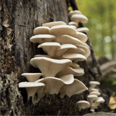
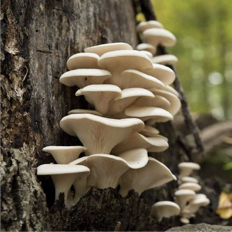

Just for fun!
Can you name these mushrooms?



I already have a few skills which will benefit me on my journey in tech. Tech is typically a highly collaborative industry. My 15 years in customer service, working with both the general public and within a team, has taught me how to work well with different personalities and overcome obstacles democratically and with positive intent. I appreciate organization and attention to detail and strive to excel in both. Lastly, my time spent in the banking industry has engrained in me a sense of urgency and awareness when it comes to privacy and security.
This industry will also allow me to have time to balance work and my personal life. I have a sweet, big ol' German Shepherd mix and we love to go out in the forest and hike. One of my favorite things to do in the forest is hunt for mushrooms. I have been mushroom foraging for about 9 years now and there is still more to learn everyday. When we aren't in the forest, Tucker and I like to spend our days on the river or just sunbathing in the backyard.
This is the very first project I created! It uses the language html.
This project is for Tucker's Blog and it uses the language html.
This project is for a cupcake website and it uses html.
This project outlines everything I learned during my first week at Epicodus. This project uses both html and bootstrap.
Can you name these mushrooms?
